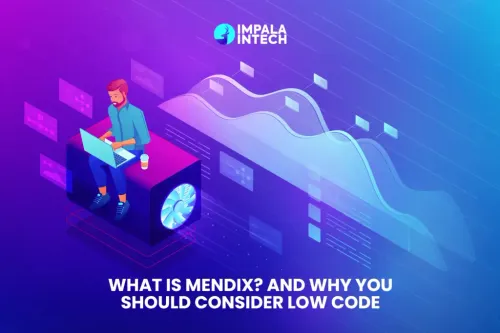
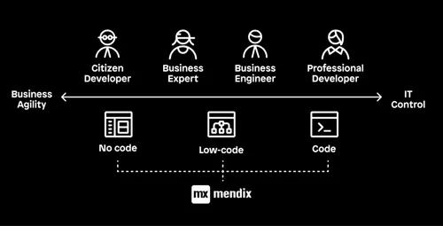
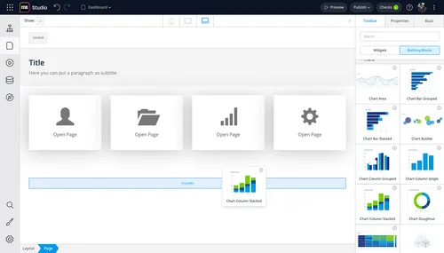

El término Low-code se refiere a un enfoque de desarrollo de software que minimiza la cantidad de código manual necesario para crear aplicaciones, páginas web o sistemas, utilizando principalmente interfaces visuales y herramientas de arrastrar y soltar. Aunque el desarrollo low code reduce significativamente la necesidad de programación tradicional, no elimina por completo la escritura de código; en cambio, permite a los desarrolladores utilizar lenguajes como JavaScript, HTML y CSS para realizar personalizaciones limitadas y ajustar la funcionalidad según las necesidades específicas del proyecto.
Velocidad de desarrollo Permite crear aplicaciones en semanas gracias a plantillas, componentes preconstruidos y un entorno visual intuitivo. Colaboración entre negocio y TI Los usuarios de negocio participan en el desarrollo sin necesidad de programar, lo que evita malentendidos y acelera la entrega. Reducción de costos Al disminuir los tiempos de desarrollo y la necesidad de grandes equipos técnicos, las empresas reducen significativamente el presupuesto de TI. Escalabilidad y flexibilidad Compatible con proyectos pequeños y grandes, desde apps internas hasta soluciones empresariales complejas. Multiexperiencia Permite desarrollar aplicaciones para web, móviles, tablets y dispositivos IoT sin duplicar el trabajo. Integración con otros sistemas Soporta conexiones con SAP, Salesforce, bases de datos SQL/NoSQL, APIs REST/GraphQL y más. Despliegue en cualquier entorno Compatible con Mendix Cloud, AWS, Azure, Google Cloud o infraestructura local.
 Recursos oficiales:
Otros recursos:
Paola Moya Diaz.
Estudiante en desarrollo de software.
Universidad Tecnologica del Norte de Guanajuato.